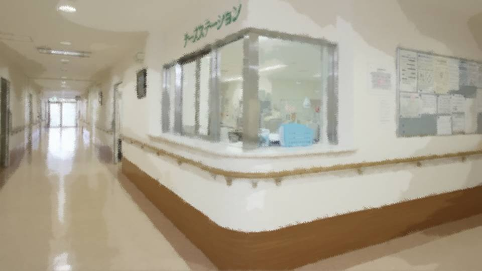

Script 00002078

「そう言えば新村さん、入院してもう2年よね」
――そうそう、入院費どうしてるんだろう。
「医療保険だって」
――医療保険？ 当時高校生だったのに、医療保険？
――そうそう、入院費どうしてるんだろう。
「医療保険だって」
――医療保険？ 当時高校生だったのに、医療保険？
「死んだ母親が過保護だったらしいわよ。
何があってもいいようにって、先進医療保証の保険かけてたんだって」
――でもその母親って新村さんをひき殺そうとしたらしいわよ？
「え！？ マジで！？ もしかして、保険金目当て？」
――でも母親は事故の後、すぐに自殺したんだって。
――でもその母親って新村さんをひき殺そうとしたらしいわよ？
「え！？ マジで！？ もしかして、保険金目当て？」
――でも母親は事故の後、すぐに自殺したんだって。
「うわ……元木町事件思い出すわ。
新村さん、皮剥ぎ死体事件の関係者だったんでしょ？」
――うん、毎日来てる古郡さんがその被害者の娘なんだって。
「新村さんも古郡さんも、親のごたごたに巻き込まれたってわけね」
――だけどいくら何でも、入院2年ってすごいよね。
――うん、毎日来てる古郡さんがその被害者の娘なんだって。
「新村さんも古郡さんも、親のごたごたに巻き込まれたってわけね」
――だけどいくら何でも、入院2年ってすごいよね。
「そりゃ元木町とこの病院だからでしょ。
普通なら退院か転院だって。
この町、町民への福利厚生はすごいじゃん？」
――まあね。だからなかなか引っ越せないよねえ。
「でも、やっぱり3年が限度らしいよ。 入院から満3年経ったら強制退院だって」
――そうなんだ。古郡さんは知ってるの？
――まあね。だからなかなか引っ越せないよねえ。
「でも、やっぱり3年が限度らしいよ。 入院から満3年経ったら強制退院だって」
――そうなんだ。古郡さんは知ってるの？
「まさか、そんなこと今から言えるわけないじゃん……」
――うん……まだ若いのに、あんなに献身的じゃ、なかなか言えないよね……。 でも新村さんの世話って私たちの仕事じゃないの？
「そうだけど、古郡さんができることは自分でやるってさ」
――えらいなあ。何か、理由でもあるのかな。
――うん……まだ若いのに、あんなに献身的じゃ、なかなか言えないよね……。 でも新村さんの世話って私たちの仕事じゃないの？
「そうだけど、古郡さんができることは自分でやるってさ」
――えらいなあ。何か、理由でもあるのかな。
「そりゃ、古郡さんの行動見てたら分かるでしょ？」
――う……。
「ま、こっちは淡々と事務的にやった方がいいわよ。 あまりあの2人に深入りしないこと」
――そうだね。
――う……。
「ま、こっちは淡々と事務的にやった方がいいわよ。 あまりあの2人に深入りしないこと」
――そうだね。